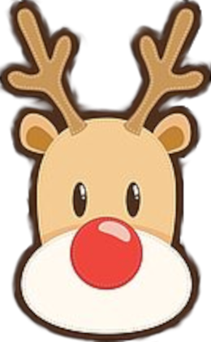

men hjälpte till att bära väskan

Ha en bra torsdag!
Gårdagens chokela' var
Beatrice skulle flyga till Skåne
Rudolf visste inte att hon kunde flyga!
men hjälpte till att bära väskan
Sedan fick de först åka bussen in till stan
och sedan byta till flygbussen
Rudolf är lite förvirrad
Kan bussar också flyga?!
Till slut kom de fram till flygplanen
Rudolf fick inte komma ombord.
Det gjorde inget, han kan ju flyga själv
Men planet kom inte iväg
Det var oväntat, det var ju den grejen
man trodde skulle flyga själv
Till slut flög det ändå
fast något försenat
Men hur skulle det nu gå med bytet
på Bromma flygplats?
Planet från Umeå skulle landa
strax efter sista planet till
Ängelholm var tänkt att lyfta!
Rudolf funderade på att ringa F&F
Han ville inte låta Bea övernatta
på ett så bråkigt ställe som en flygplats
Men som tur var kunde Rudolf
övertyga Ängelholmsplanets pilot
att vänta på Bea
Klart de gjorde det!
Bea sprang till rätt gate
och var sist på!
Så 19:20 landade de på Ängelholm
och Jeka skjutsade hem både
Beatrice och Rudolf
för ett skönt jullov